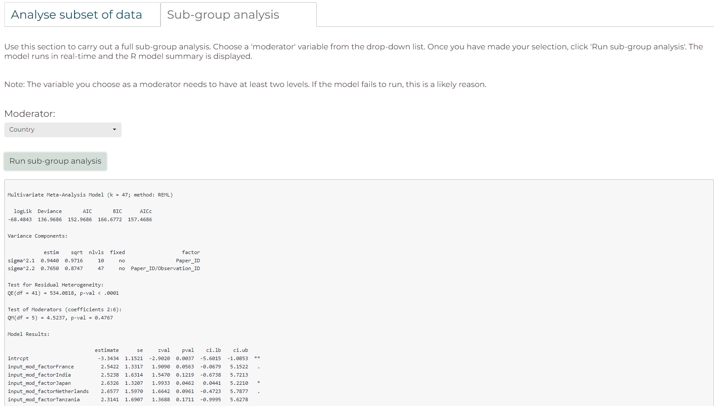

Introduction to Dynameta: A dynamic platform for ecological meta-analyses in R Shiny
Dynameta is an R Shiny platform written as an R package. This means the app can be launched by running the launch_Dynameta() function included in the R package. The Dynameta app can then be used to run interactive meta-analytic models. This document introduces you to the Dynameta package, how to use it to launch the Dynameta Shiny app, and how to use the Dynameta Shiny app.
Meta-analyses are used to quantitatively summarise evidence across studies in a systematic process. Their larger sample size (and hence power) compared to individual research studies increases the chance of detecting significant effects.
Despite representing a significant improvement upon individual studies, meta-analyses have a number of limitations which Dynameta was developed to overcome:
- Meta-analytic results are based on a snapshot of literature at a particular time. As a living review platform, Dynameta overcomes this by enabling results to be continually updated as new evidence becomes available.
- Meta-analytic publications are restricted to presenting the results of the chosen questions asked by those researchers. On the other hand, Dynameta allows investigation of a range of questions based on varying interests of researchers through manipulation of the graphical user interface.
Dynameta is designed for interactive ecological meta-analyses, oriented around testing the effect of anthropogenic threats (based on the IUCN threats classification scheme) on biodiversity. Nevertheless, the code can be easily repurposed to suit a variety of meta-analytic contexts. Please see the Editing the codebase section of this vignette for an example of this. The server.R and ui.R files that define the Dynameta Shiny app can be found in the Dynameta_app/ directory. On github, Dynameta_app/ can be found in the inst/ directory. If you have installed the package, the Dynameta_app/ directory can be found directly in the package root directory, alongside the DESCRIPTION, NAMESPACE, etc. files.
Dynameta was developed as part of the GLiTRS project, a cross-institutional consortium aiming to build global threat-response models to better understand and predict insect biodiversity change.
Installing and using the Dynameta package
Installing in RStudio using devtools
Installing the package requires devtools, which can be installed and
loaded by running the following code in the R console:
NOTE: If you
have not installed devtools before you will need to restart your R
session before installing to avoid problems.
install.packages("devtools")
library(devtools)If you have issues installing devtools, you could try the remotes package as an alternative. This is a lightweight replacement of the install_* functions in devtools. Install by running:
install.packages("remotes")
library(remotes)Next, install the Dynameta package by running the following code in the R console:
devtools::install_github("gls21/Dynameta", build_vignettes = TRUE)Then load it:
library(Dynameta)
library(tibble) # for previewing sample dataset
#> Warning: package 'tibble' was built under R version 4.2.3Or if using remotes, run:
remotes::install_github("gls21/Dynameta", build_vignettes = TRUE)
library(Dynameta)A potential reason for unsuccessful installation is the vignette not building correctly. If this is the case, remove the ‘build_vignettes = TRUE’ argument from the installation command.
Please see the README for alternative installation options.
Using the Dynameta package
Any meta-analysis must be underpinned by a robust evidence gathering framework, which must be completed before proceeding with Dynameta. This includes writing and registering a protocol outlining clearly defined research questions and evidence inclusion criteria, carefully considering the suitability of evidence based on these criteria, and determining who will be responsible for updating the meta-analysis with Dynameta, and for how long (as to avoid research waste). Please refer to the resources listed in the README.
Once you have successfully installed Dynameta, to access help documentation, run:
help(package = "Dynameta")View sample data: The Dynameta package comes with
sample_data, which is used by default by the Dynameta Shiny
app. This is an example dataset containing data collected for a GLiTRS
meta-analysis investigating the effect of pollution (specifically
pesticide application) on dragonfly and damselfly (Odonata) abundance.
The dataset is described in full in
?Dynameta::sample_data.
dim(Dynameta::sample_data)
#> [1] 47 46
# Print dataset as a tibble (nice way to preview dataset)
as_tibble(sample_data)
#> # A tibble: 47 × 46
#> Paper_ID Included Observation_ID Author Year Title Journal DOI URL
#> <chr> <chr> <chr> <chr> <int> <chr> <chr> <chr> <chr>
#> 1 Suhling 2000 Y Suhling 2000 1 Suhlin… 2000 Effe… Hydrob… http… http…
#> 2 Suhling 2000 Y Suhling 2000 2 Suhlin… 2000 Effe… Hydrob… http… http…
#> 3 Suhling 2000 Y Suhling 2000 3 Suhlin… 2000 Effe… Hydrob… http… http…
#> 4 Suhling 2000 Y Suhling 2000 4 Suhlin… 2000 Effe… Hydrob… http… http…
#> 5 Suhling 2000 Y Suhling 2000 5 Suhlin… 2000 Effe… Hydrob… http… http…
#> 6 Suhling 2000 Y Suhling 2000 6 Suhlin… 2000 Effe… Hydrob… http… http…
#> 7 Suhling 2000 Y Suhling 2000 7 Suhlin… 2000 Effe… Hydrob… http… http…
#> 8 Suhling 2000 Y Suhling 2000 8 Suhlin… 2000 Effe… Hydrob… http… http…
#> 9 Suhling 2000 Y Suhling 2000 9 Suhlin… 2000 Effe… Hydrob… http… http…
#> 10 Suhling 2000 Y Suhling 2000 10 Suhlin… 2000 Effe… Hydrob… http… http…
#> # ℹ 37 more rows
#> # ℹ 37 more variables: Language <chr>, Database <chr>, Latitude <dbl>,
#> # Longitude <dbl>, Country <chr>, Taxa_level <chr>, Taxa_name <chr>,
#> # Order <chr>, Family <chr>, Genus <lgl>, Binomial <chr>,
#> # Life_history_stage <chr>, Experimental_year_start <int>,
#> # Experimental_year_end <int>, Sampling_method <chr>,
#> # Biodiversity_metric <chr>, Unit <chr>, IUCN_threat_category_1 <chr>, …Launch the Dynameta Shiny app: To launch a local instance of the
Dynameta Shiny app, run the following code:
The following code is
not executed here as it prevents the document from knitting.
Dynameta::launch_Dynameta() # The function takes no argumentsProcess for using the Dynameta Shiny app
1. Introduction tab
- Once the app has opened, you can choose whether you want to analyse the sample data included in the package or upload your own meta-analytic data to analyse.
- If you select ‘Your own data’, you will then be given the option to upload a .csv file. This needs to be of the same format as the sample data provided.
- The ‘Introduction’ tab provides a breakdown of the data that you will analyse using Dynameta, including details of the papers and the IUCN threat(s) they investigated, and a map indicating where each data point originated from.

2. Run models tab
- To run meta-analytic models to investigate how different threats impact biodiversity, go to the ‘Run models’ tab.
- The models are multilevel meta-analytic models, run using the metafor package. The models account for the non-independence of the data by specifying paper and observation identification as nested random effects.
- The effect size used to compare biodiversity is the log transformed Ratio Of Means (ROM) (also known as the log response ratio), which quantifies proportionate change between treatments.
- Based on your research question, you can filter the data by threat, location, taxonomic order, and biodiversity metric the data was collected with.
- Make your selections, then click ‘Run custom model’.

- Dynameta will run the model in real-time and produce a forest plot of the results. This includes an estimate of the overall effect size of your chosen IUCN threat on biodiversity.
- There are options available to download the results.


Editing the codebase
A user may wish to edit the codebase to better suit their needs. Here we document an example of how to add the option to perform full sub-group analysis on the data (in addition to the current approach taken by Dynameta, which is to complete a meta-analysis on a subset of the data). For full sub-group analysis, several separate random-effects meta-analyses are conducted (one for each sub-group) and the effects of the sub-groups are compared using a statistical test. To run a meta-analytic model with sub-group analysis using metafor, you can add a categorical variable as a moderator.
Careful consideration needs to be taken when conducting sub-group analysis, both in terms of deciding when it is appropriate to carry out, and when interpreting the results. As a guide, the Cochrane Handbook section 10.11.5.1 suggests that at least ten data points need to be available for each sub-group modelled. For a guide to interpreting the results, please see Richardson et al. (2019).
To add sub-group analysis as an option in Dynameta, you need access to the scripts that need to be edited. Possible options are to fork the Dynameta GitHub repo, or download the repo as a zipped file.
Next you will need to open the ui.R and server.R files that make up the Dynameta shiny app. These are in the /inst/Dynameta_app/ directory.
The following chunks of code need to be added to the ui.R and server.R files at the line numbers specified. NOTE: The line numbers correspond to the line numbers in the Vxxx release of Dynameta code.
ui.R script
1
Section: Modelling tab
Line 239
Insert the code beneath this line of code:
shiny::tabPanel("Run models",And above these lines of code:
# ----------------------------------------------------------------------------------------------------------------------
# Title to show at top of tab
p(h2(tags$b("Run models"))),Code to add:
# Make tab buttons within this tab bigger
tags$style(HTML("
.tabbable > .nav > li > a {
width: 400PX; font-size: 30px
}
")),2
Section: Modelling tab
Line 256
Insert the code beneath these lines of code:
p(h5("The effect size used to compare biodiversity is the log transformed Ratio Of Means (ROM) (also known as the log response ratio),
which quantifies proportionate change between treatments.")),And above these lines of code:
tags$br(),
tags$hr(),
# -----------------------------------------------------------------------------------------------------------------------
# ===========================================================================================================
### Running custom modelsCode/text to alter/add:
# Alter this text to describe difference between subset analysis and sub-group analysis
## Comment out this original text ##
#p(h5("Based on your research question, you can filter the data by threat, location, taxonomic order, and biodiversity metric.")),
# Add this text
p(h5("There are two options available for analysis:")),
h5(tags$ol(
tags$li("Filter the data by threat, location, taxonomic order, and biodiversity metric
and run a meta-analytic model on this subset of data."),
tags$li("Choose a moderator variable and carry out a full sub-group analysis
(meta-regression with a categorical predictor) to see if the pooled effect sizes
found in these sub-groups differ from each other.")
)),3
Section: Modelling tab
Line 269
Insert the code beneath these lines of code:
# ===========================================================================================================
### Running custom models
# ===========================================================================================================And above these lines of code:
h5("Use this section to filter the data. Once you have made your selections, click 'Run custom model'.
The model runs in real-time and the results are presented as a forest plot."),Code to add:
### Include 2 tabs within the 'Run models' tab
# One for analysing subset of data (as Dynameta did originally)
# One for full sub-group analysis
shiny::tabsetPanel(type = "tabs",
# ------------------------------------------------------------------------------------------------------------------------
### Analyse subset of data tab
# ------------------------------------------------------------------------------------------------------------------------
shiny::tabPanel("Analyse subset of data",
tags$br(),
4
Section: Modelling tab
Line 421
Insert the code beneath these lines of code:
# download button for downloading forest plot
shiny::downloadButton(outputId = "download_forest_plot",
label = "Download forest plot",
style='font-size:125%')
)
),
tags$br(),
tags$br()And above these lines of code:
), # close modelling tab
# ===============================================================================================================================
# ===============================================================================================================================
# References tabCode to add:
), # Close 'Analyse subset of data' tab
# ------------------------------------------------------------------------------------------------------------------------
### Sub-group analysis tab
# ------------------------------------------------------------------------------------------------------------------------
shiny::tabPanel("Sub-group analysis",
tags$br(),
h5("Use this section to carry out a full sub-group analysis.
Choose a 'moderator' variable from the drop-down list.
Once you have made your selection, click 'Run sub-group analysis'.
The model runs in real-time and the R model summary is displayed."),
tags$br(),
h5("Note: The variable you choose as a moderator needs to have at least two levels.
If the model fails to run, this is a likely reason."),
tags$br(),
# Add parts for sub-group analysis
shiny::fluidRow(
shiny::column(
12,
# Select input for choice of moderator
h4(shiny::uiOutput("reactive_moderator_choice")),
tags$br(),
# include action button to run model once inputs have been selected
shiny::actionButton("run_sub_group_analysis", "Run sub-group analysis", style='font-size:125%'),
tags$br(),
tags$br(),
# Render output of model
shinycssloaders::withSpinner(shiny::verbatimTextOutput(outputId = "subgroup_model_output")),
tags$br(),
tags$br(),
tags$br(),
tags$br()
),
),
), # Close 'Sub-group analysis' tab
# ------------------------------------------------------------------------------------------------------------------------
), # close tabs within 'Run models' tab server.R script
1
Section: Run models tab
Line 579
Insert the code beneath these lines of code:
# Download forest plot button
output$download_forest_plot <- shiny::downloadHandler(
filename = function() {
paste0("forest_plot", base::Sys.Date(), ".png", sep="")
},
content = function(file) {
grDevices::png(file, width = 1500, height = 1000)
metafor::forest(custom_model(),
xlim = c(-12, 8), # horizontal limits of the plot region
ilab = base::cbind(Treatment), # add in info on treatment used
ilab.xpos = -8, # position treatment labels
order = Treatment, # Order results by treatment
cex = 1.5,
col = "#0483A4", # change colour of overall effect size diamond using CEH hero colour
mlab = "RE Model for All Studies",
header = "Author(s) and Year")
grDevices::dev.off()
}
)And above these lines of code:
# ----------------------------------------------------------------------------------------------------------------
# =================================================================================================================
# =================================================================================================================
##### References tabCode to add:
## Make reactive moderator (for sub-group analysis) choices
output$reactive_moderator_choice <- shiny::renderUI({
shinyWidgets::pickerInput(inputId = "moderator_choice",
label = "Moderator:",
choices = base::names(data()),
selected = "Country",
multiple = FALSE) # add actions box for selecting/de-selecting all options
})
### Run model
# Run sub-group analysis model once the run model button has been pressed
sub_group_analysis <- shiny::eventReactive(input$run_sub_group_analysis, {
subgroup_analysis_data <- data()
# Try to run the model. If doesn't work, tell user to include more data or view error message.
base::tryCatch(
expr = {
# add small value to control and treatment columns
subgroup_analysis_data$Treatment_Mean <- subgroup_analysis_data$Treatment_Mean + 0.1
subgroup_analysis_data$Control_Mean <- subgroup_analysis_data$Control_Mean + 0.1
# calculate effect sizes from number, mean, and SD - data needs to be in wide format
# Adds yi and vi columns to data
subgroup_analysis_data <- metafor::escalc(measure = "ROM", # log transformed ratio of means (i.e. log response ratio)
n1i = subgroup_analysis_data$Treatment_N,
n2i = subgroup_analysis_data$Control_N,
m1i = subgroup_analysis_data$Treatment_Mean,
m2i = subgroup_analysis_data$Control_Mean,
sd1i = subgroup_analysis_data$Treatment_error,
sd2i = subgroup_analysis_data$Control_error,
slab = paste(Paper_ID), # slab adds study labels which will help when we make forest plot
data = subgroup_analysis_data)
# Make the chosen moderator a factor
input_mod_factor <- as.factor(subgroup_analysis_data[, input$moderator_choice])
# Run metafor model
sub_group_analysis_model <- metafor::rma.mv(yi, vi, # effect sizes and corresponding variances
random = ~ 1 | Paper_ID/Observation_ID, # specify random-effects structure of model
mods = ~ input_mod_factor, # specify the user's chosen moderator
data = subgroup_analysis_data)
sub_group_analysis <- sub_group_analysis_model
}, error = function(e) {
# If model does not successfully run, stop the process and return this error message
base::stop(shiny::safeError(paste0("This model failed to run. This may be due to insufficient data for this model to run, but please see the R error message: ", e)))
})
})
### Render the model summary output
output$subgroup_model_output <- shiny::renderPrint({
shiny::req(sub_group_analysis())
base::summary(sub_group_analysis())
})To test the app, click the ‘Run App’ button in RStudio, or use the ‘shiny::runApp()’ command.
Adding these chunks of code results in an additional tab for sub-group analysis in the ‘Run models’ tab of the app. Here, you are given the option to chose a moderator, and then click ‘Run sub-group analysis’ to run the meta-analytic model and produce the R model summary.

Users can build on the example here around sub-group analysis, add additional features, or alter other parts of the app as desired to suit their needs.
References
Higgins JPT, Thomas J, Chandler J, Cumpston M, Li T, Page MJ, Welch VA (editors). Cochrane Handbook for Systematic Reviews of Interventions version 6.3 (updated February 2022). Cochrane, 2022. Available from www.training.cochrane.org/handbook.
Richardson, M., Garner, P., & Donegan, S. (2019). Interpretation of subgroup analyses in systematic reviews: A tutorial. Clinical Epidemiology and Global Health, 7(2), 192–198. https://doi.org/10.1016/j.cegh.2018.05.005